Aliran Kerja HBH
Berikut adalah ringkasan keseluruhan proses yang perlu dilakukan semasa Hari Bekerja Hibrid menggunakan sistem SpotMe.
Sistem SpotMe
Akses melalui spotme.jdn.gov.my — pastikan GPS/lokasi diaktifkan pada peranti anda.
Contoh Tugasan
"Menyiapkan 13 laporan Analisis Logam Berat bagi sampel Kosmetik — 40 minit/laporan (Termasuk semakan keputusan dan penyediaan laporan)"
Upload Bukti Kerja
Upload dokumen kerja ke Google Drive dalam folder: UNIT ANALISIS LOGAM... → HBH → [Nama]
Penting!
Jangan tekan "Daftar Keluar" sebelum jam 6:00 PM — jika tidak, jam kerja akan tidak mencukupi!
Buka SpotMe
Pergi ke spotme.jdn.gov.my melalui pelayar web. Pastikan GPS diaktifkan.
Isi Ulasan
Dalam ruangan "Ulasan", boleh biarkan kosong atau tulis catatan ringkas.
Isi Sebab Bekerja Dari Rumah
Tulis: Menjalankan tugasan yang telah ditetapkan
Tekan "Daftar Masuk"
Klik butang "Daftar Masuk" untuk merekodkan kehadiran anda.
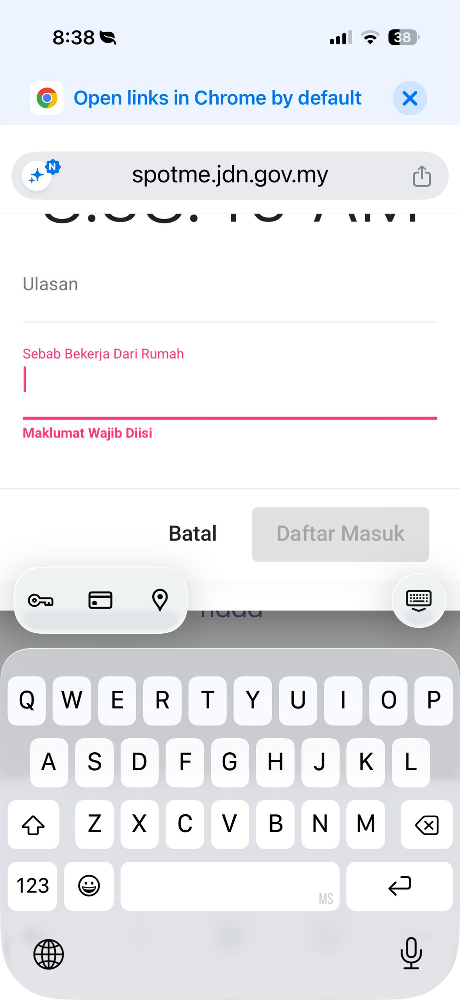
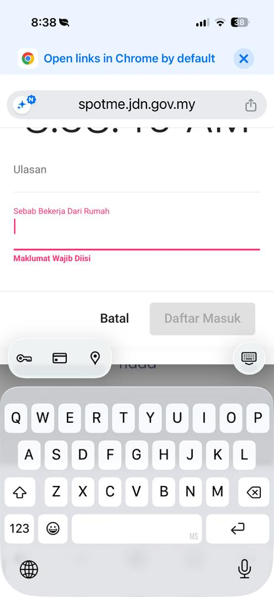
Dashboard → Catatan Tugasan Harian
Di halaman dashboard, cari bahagian "Catatan Tugasan Harian".
Klik "Kemaskini Tugasan"
Tekan butang "Kemaskini Tugasan" untuk membuka popup catatan.
Isi Catatan Tugasan
Tulis tugasan yang sama seperti dalam Excel. Contoh untuk Makmal Logam Berat:
Tekan "Tutup" / Simpan
Selesai memasukkan tugasan, tutup popup tersebut.
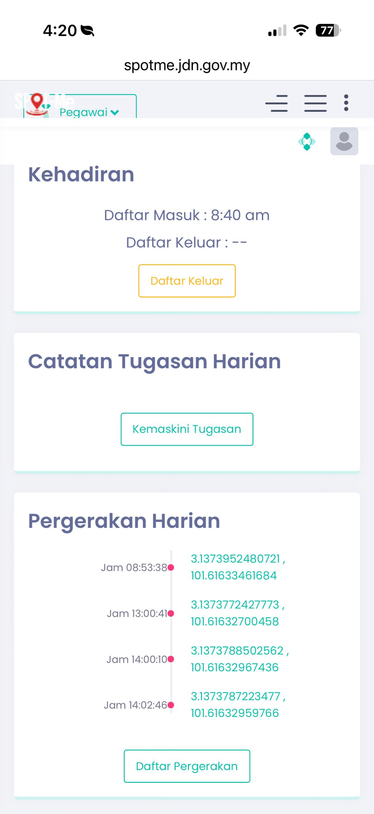
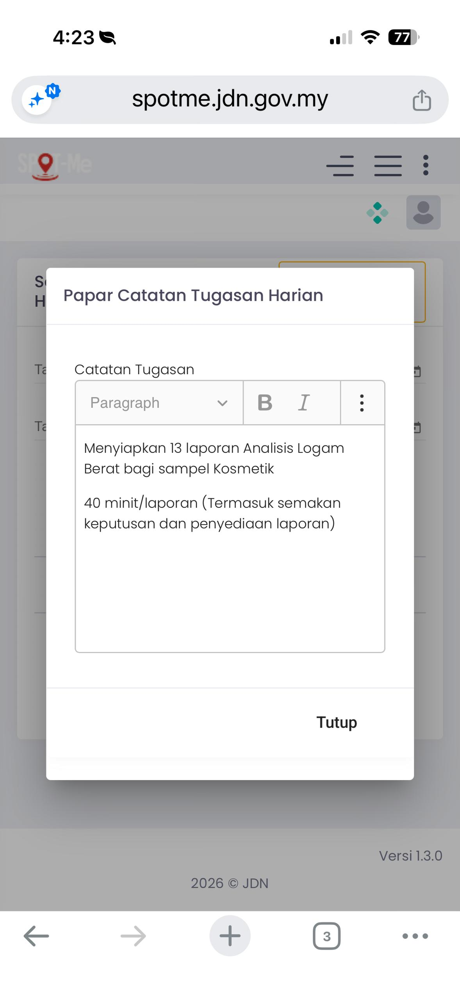
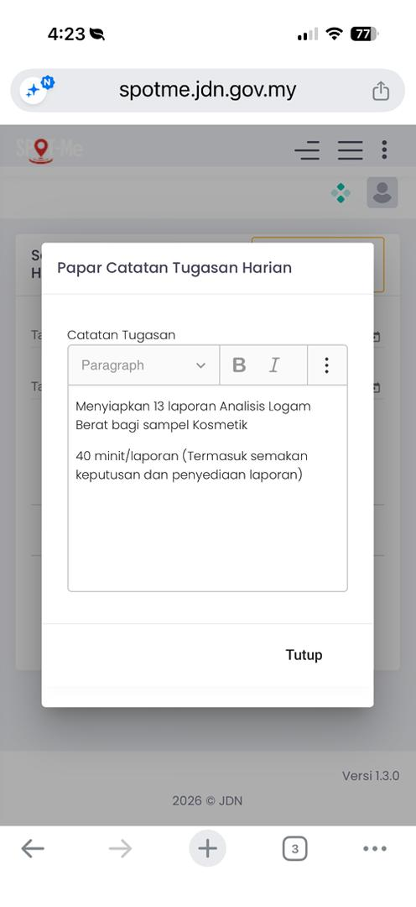
Dashboard → Pergerakan Harian
Di halaman dashboard, scroll ke bahagian "Pergerakan Harian".
Klik "Daftar Pergerakan"
Tekan butang "Daftar Pergerakan" — popup akan keluar menunjukkan masa semasa.
Isi Ulasan
Tulis tugasan yang sedang dilakukan. Contoh:
Tekan "Daftar"
Klik butang "Daftar" — sistem akan merekod lokasi GPS anda secara automatik.
Tip: GPS Lokasi
Setiap kali anda tekan "Daftar Pergerakan", sistem akan merekod koordinat GPS anda. Pastikan lokasi peranti anda diaktifkan supaya rekod adalah tepat.
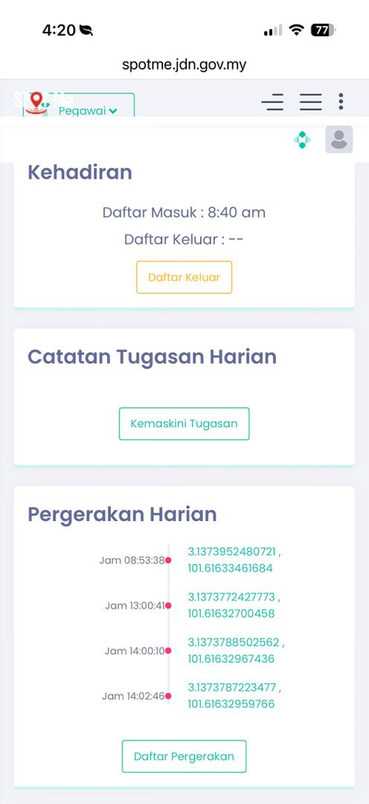
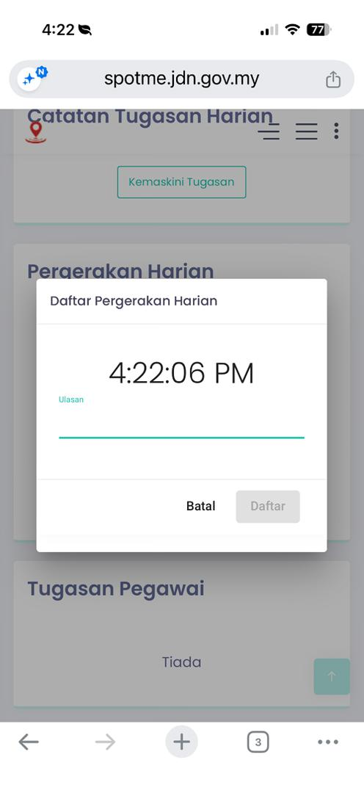
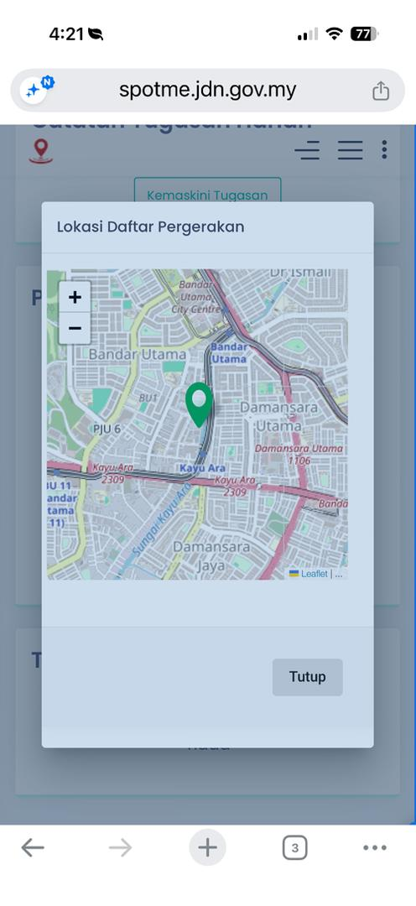
Pergerakan Harian → "Daftar Pergerakan"
Pada pukul 1:00 PM, pergi ke bahagian Pergerakan Harian dan klik "Daftar Pergerakan".
Tulis "Waktu Rehat"
Dalam ruangan Ulasan, tulis:
Tekan "Daftar"
Klik butang "Daftar" untuk merekodkan waktu rehat.
Penting!
Ini BUKAN "Daftar Keluar"! Jangan tekan Daftar Keluar untuk waktu rehat. Gunakan "Daftar Pergerakan" sahaja.
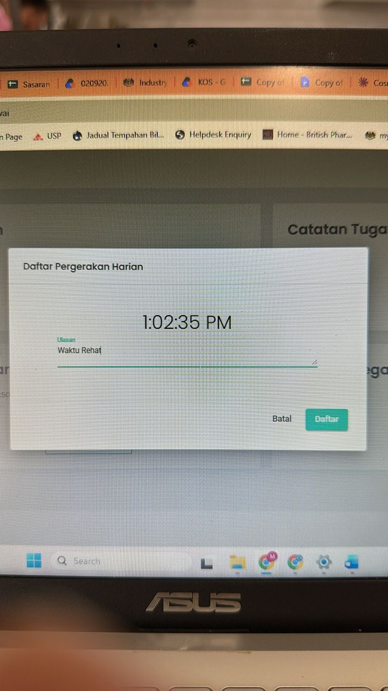
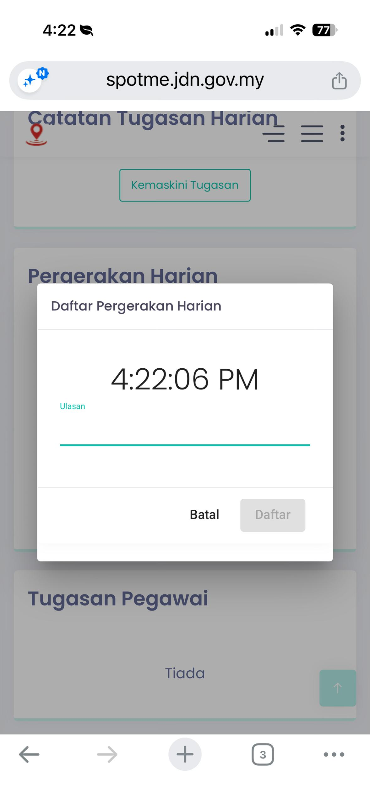
Pergerakan Harian → "Daftar Pergerakan"
Pada pukul 2:00 PM, klik "Daftar Pergerakan" sekali lagi.
Tulis catatan sambung kerja
Dalam ruangan Ulasan, tulis:
Tekan "Daftar"
Klik butang "Daftar".
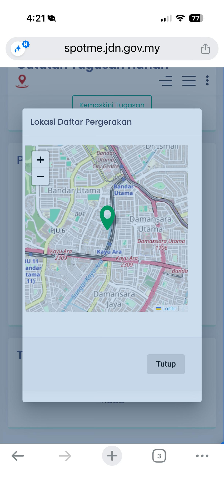
Dashboard → Kehadiran
Di bahagian "Kehadiran", anda akan nampak "Daftar Keluar : --".
Klik "Daftar Keluar"
Tekan butang "Daftar Keluar". Pastikan jam kerja telah mencukupi (~9 jam).
(Opsional) Rekod pergerakan akhir
Anda juga boleh tekan "Daftar Pergerakan" dengan ulasan:
Jangan Daftar Keluar Awal!
Pastikan jam kerja telah mencukupi sebelum daftar keluar. Jika daftar keluar awal, masa kerja akan dikira kurang dan status kehadiran mungkin bermasalah.
Boleh Update Kemudian
Jika anda terlupa kemaskini senarai pergerakan harian sebelum daftar keluar, anda masih boleh update selepas itu — tiada masalah!
Menu → Pengurusan Isu Kehadiran
Pergi ke menu "Pengurusan Isu Kehadiran" → "Senarai Permohonan".
Klik ikon pensil (✏️)
Cari tarikh hari berkenaan dan klik ikon pensil (edit) pada baris tersebut.
Semak & Isi Maklumat
Popup akan keluar menunjukkan maklumat kehadiran. Isi:
- Catatan Tugasan: Sama seperti yang diisi sebelum ini
- Sebab BDR:
Menjalankan tugasan yang telah ditetapkan - Ulasan: Sama seperti catatan tugasan
Tekan "Hantar"
Scroll ke bawah dan klik butang "Hantar". Ini adalah langkah terakhir dalam SpotMe sebelum menjana laporan.
Hantar Bila Masa Cukup
Pastikan anda hanya tekan "Hantar" selepas jam kerja mencukupi. Jika dihantar awal, masa kerja mungkin tidak tepat.
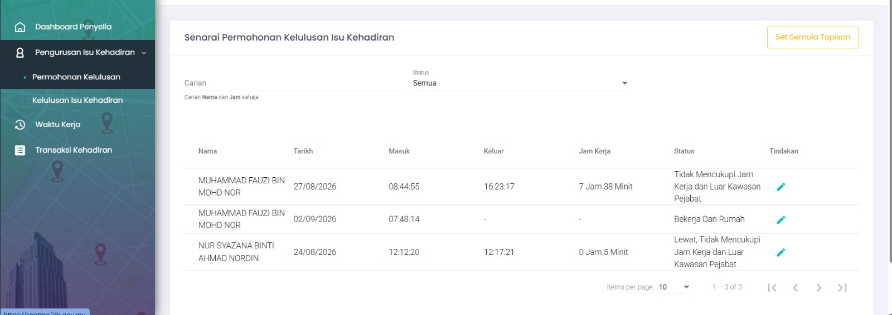
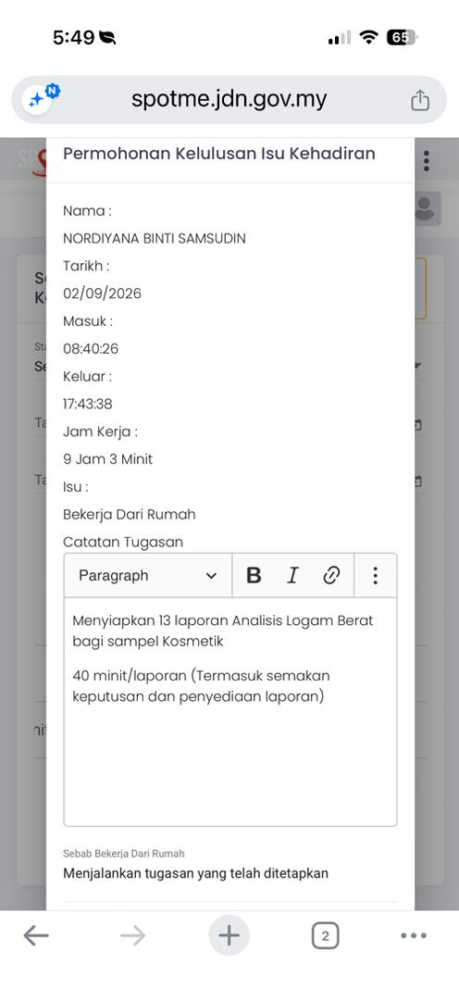
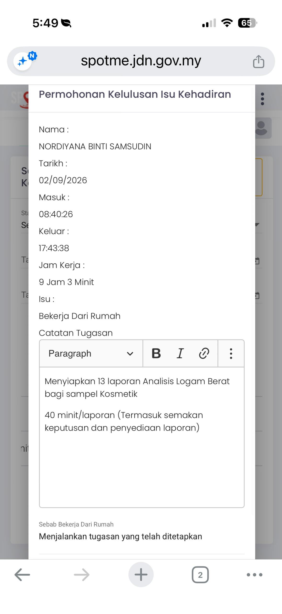
Menu → Laporan Kehadiran Peribadi
Di SpotMe, pergi ke bahagian "Laporan Kehadiran Peribadi".
Pilih Tarikh HBH
Tetapkan "Tarikh Dari" dan "Tarikh Ke" kepada tarikh HBH hari tersebut.
Klik "Jana Laporan"
Tekan butang "Jana Laporan". PDF laporan kehadiran akan dijana.
Muat Turun Laporan
Laporan PDF akan menunjukkan maklumat lengkap: tarikh, jenis kehadiran, waktu masuk/keluar, catatan, senarai pergerakan harian, dan status kelulusan.
Upload ke Google Drive
Upload laporan & dokumen kerja ke folder Google Drive:
Upload dokumen-dokumen berikut:
- 📄 Laporan Kehadiran Peribadi (PDF)
- 📊 Laporan IQC CRM (Excel)
- 📝 PKKK_UALB Laporan Parameter (Word)
- 📝 PKKK_UALB Preparation std calibration (Word)
- 📊 RESULT CRM (Excel)
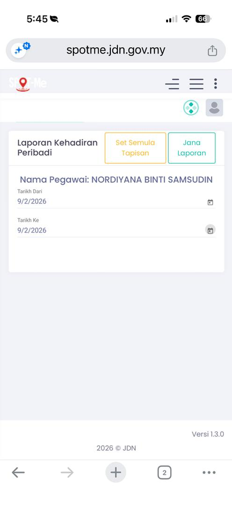
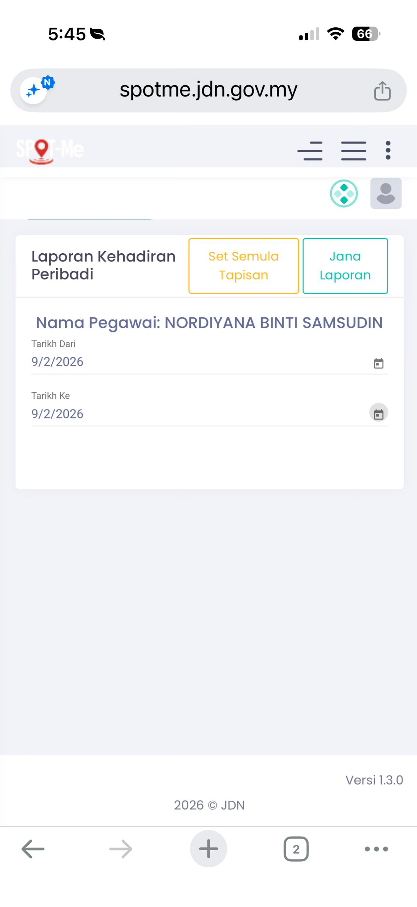
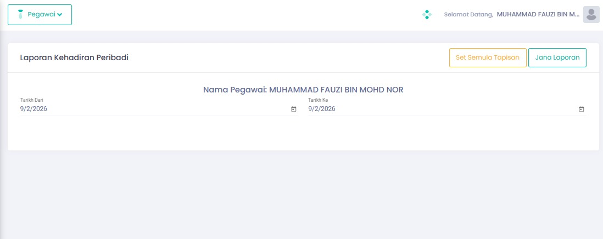
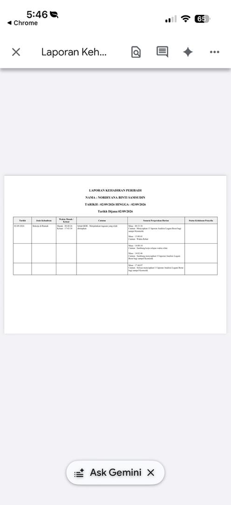
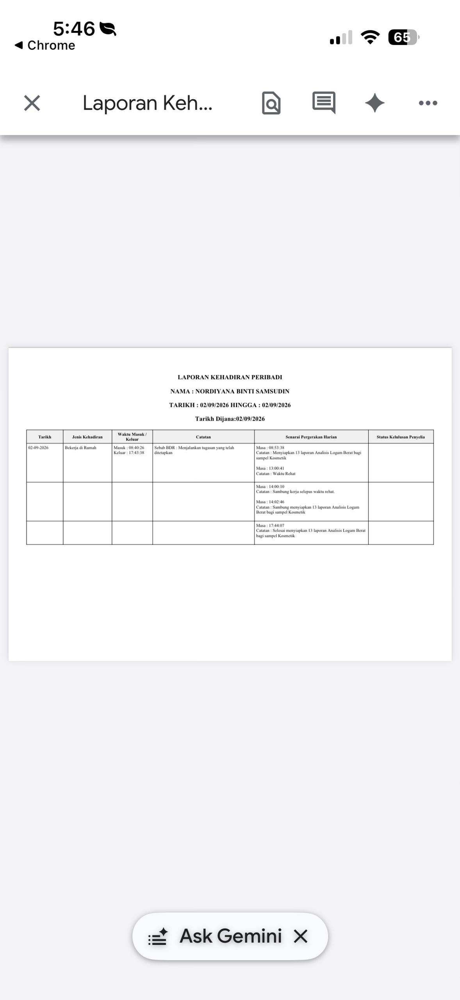
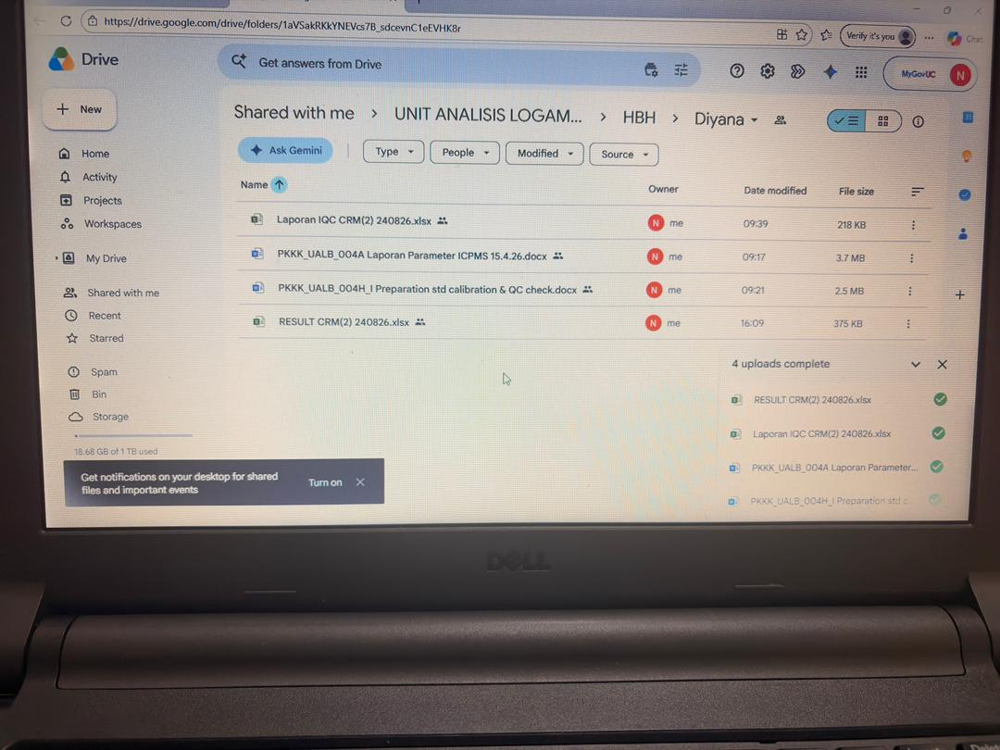
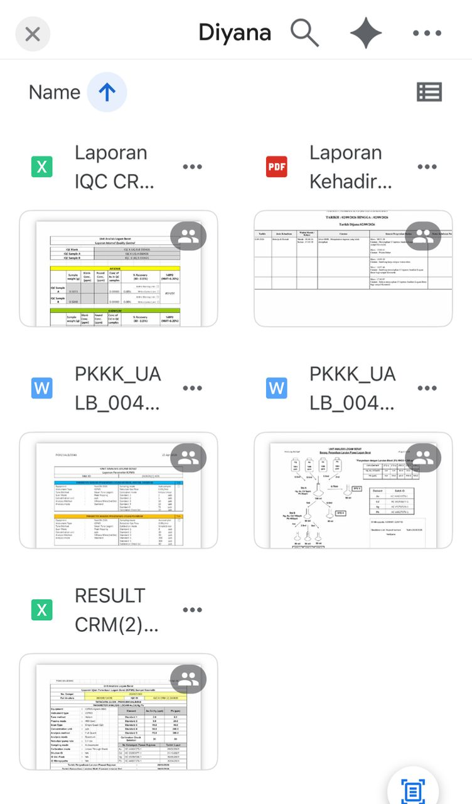
Jadual Masa HBH
Rujukan pantas untuk masa-masa penting sepanjang hari bekerja hibrid.
Daftar Masuk
Log masuk SpotMe, isi sebab BDR, daftar masuk
Kemaskini Tugasan
Isi catatan tugasan harian & daftar pergerakan pertama
Sesi Kerja Pagi
Jalankan tugasan yang ditetapkan
Daftar Pergerakan — Rehat
Tulis "Waktu Rehat" dalam daftar pergerakan
Daftar Pergerakan — Sambung Kerja
Tulis "Sambung kerja selepas waktu rehat"
Sesi Kerja Petang
Sambung & selesaikan tugasan
Daftar Pergerakan — Selesai
Rekod pergerakan terakhir — selesai menyiapkan tugasan
Daftar Keluar
Daftar keluar setelah jam kerja mencukupi (~9 jam)
Hantar Permohonan & Jana Laporan
Permohonan kelulusan kehadiran → Jana laporan PDF → Upload ke Google Drive